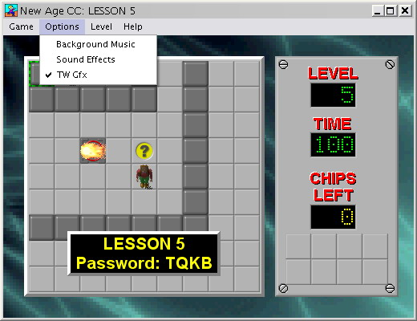

(Pictured: CHIPS.DAT level 100, Colony)
My first levelset was AndrewE1.dat. When I started working on it, my goal was to create a new 149-level levelset, complete with secret levels and "lessons", but I realize now that I was being way too ambitious. My current goal is to create two ~20-level sets; one for the Lynx ruleset, and one for the MSCC ruleset.
Download the Lynx levelset (B; 1 level, updated 2005-01-06)
For archival purposes, AndrewE1.dat is still available for download. (B)
cclpinfo is a small utility written by myself and Madhav Shanbhag which displays the number and name of all levels in a selected levelset, with options to display the time limit, password, chips required, and hint. cclpinfo was based on a program called datstat.
Current version: 1.3
View the readme
View the changelog
Download cclpinfo.zip (7.55KB; source included)
Current version: 0.1
View the readme
Download cclpmap (XXX KB; C source included)
Programs people have created that relate to Chip's Challenge
These programs allow you to create custom levels
These programs help you manage and play custom levelsets
These programs modify chips.exe in some way.
This program allows you to customize nearly everything about chips.exe. Including the program title, the "decade messages", the ending level, the death messages, etc. But most importantly it lets you change the graphics.
Part of CCTools.
Several very talented people have created their own custom graphics for Chip's Challenge.
Anders Kaseorg created this tileset for use in Tile World. The images were created with the help of POV-Ray, a ray-tracing program. As a result, they are much more 3D-looking than the original graphics.
Michael Hansen later used the graphics in a graphical patch for MSCC, dubbed "New Age CC", to demonstrate CCHack.

(Pictured: CHIPS.DAT level 5, Lesson 5)
Natural CC takes place in a sprawling field, where Chip runs around collecting [potato] chips, and avoiding quick-sand and lava.
Madhav pioneered the practice of distributing image patches to modifiy the existing graphics, rather than distributing the entire file. He even created a special tool, patchbmp, to help with the task. Time will tell whether other people will follow his example.
(Pictured: CHIPS.DAT level 100, Colony)
The Kayu Interface gives the Chip's Challenge graphics a much needed upgrade, with shinier tiles and a softer, calmer feel overall.

(Pictured: CHIPS.DAT level 99, Catacombs)
Whilst developing Tile World, Brian created some goofy graphics, which have since been replaced by Anders's 3-D tiles. They are still available for download on his site, albeit slightly hidden. [mirror]
I resized them and converted them into the "masked" format required by MSCC. He didn't call it Silly World, but i am now.

(Pictured: CHIPS.DAT level 46, Three Doors)
Christopher Trumbour screencapped every animation frame of every tile in the DOS port of Chip's Challenge, resized them, recolored them, and put them into Tile World's tile format to make this awesome tileset.

(Pictured: CHIPS.DAT level 3, Lesson 3
There are a few patches that people have produced for the Windows port of Chip's Challenge.
Fixes a bug where, when Chip steps on a square with two transparent objects (in other words, keys, monsters or boots), the game crashes.
Fixes another bug in the game, where the timer fails to fully reset. Also adds the ability to switch the game between even- and odd-step mode.
Transforms one of the previously unused tiles into the Ice Block.
This is where we all get together to talk. You'll need a newsreader. Like Thunderbird. Or you can use Anders's web interface.
An index of almost every Chip's-Challenge-related thing on the internet, including a massive index to almost every levelset in existence.